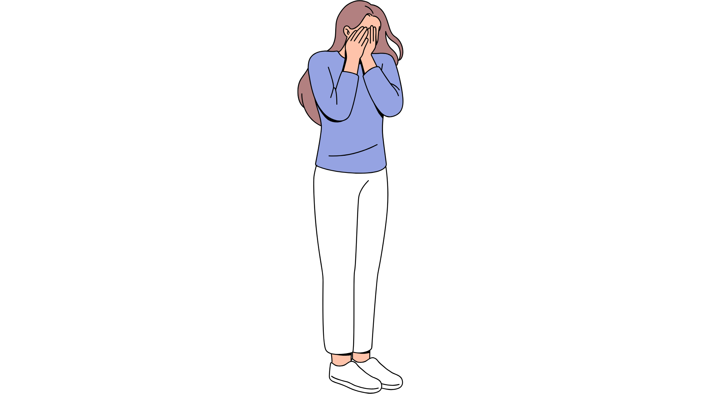
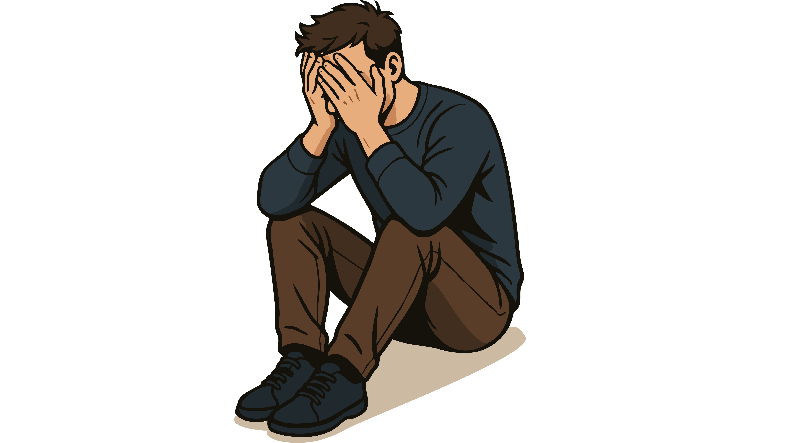
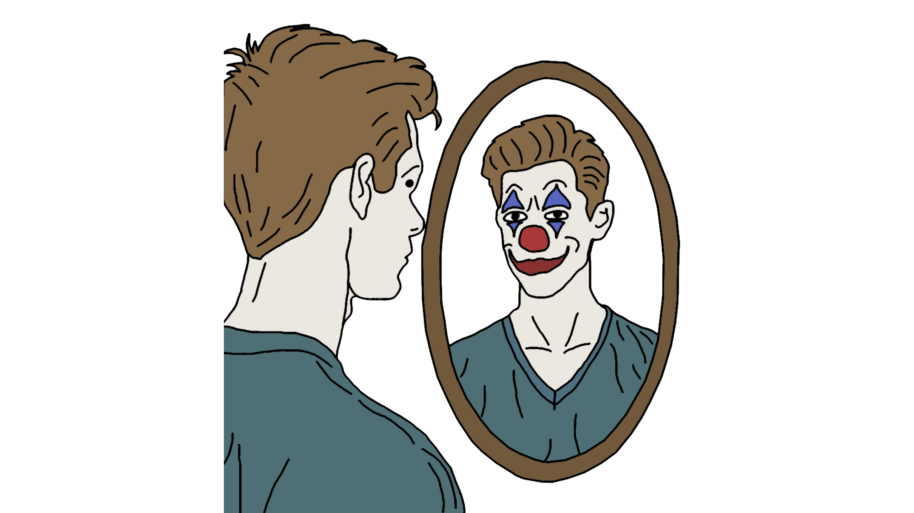
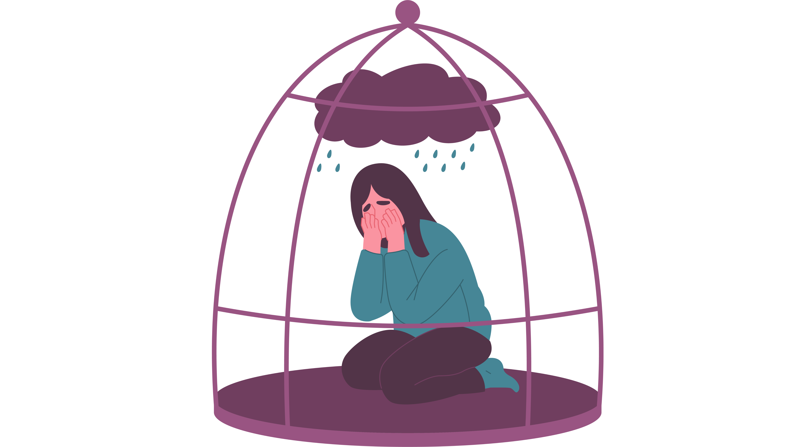
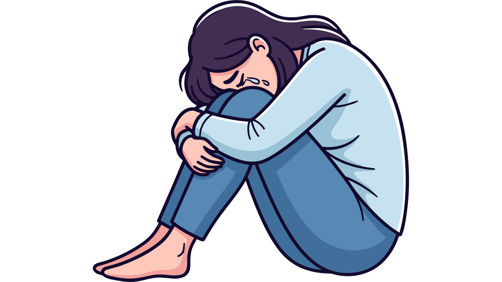
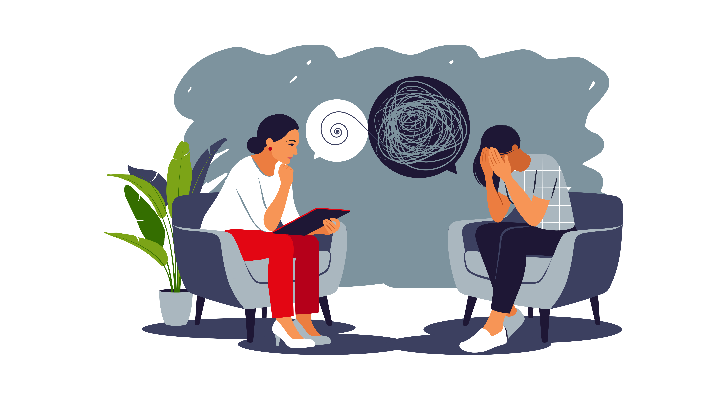

Bienvenidos. En Conscientemente ofrecemos un espacio de acompañamiento psicológico orientado al bienestar emocional, basado en evidencia clínica y en una relación terapéutica cercana, ética y respetuosa de los procesos individuales.
Áreas de acompañamiento terapéutico
 Ansiedad
Ansiedad
 Ansiedad social
Ansiedad social

Autoestima
 Depresión
Depresión
 Adolescencia y crianza
Adolescencia y crianza

Autolesiones y conducta suicida
 Trastorno bipolar
Trastorno bipolar
Dependencia emocional

Trastornos de la personalidad

Trauma

Duelo

Otros motivos de consulta